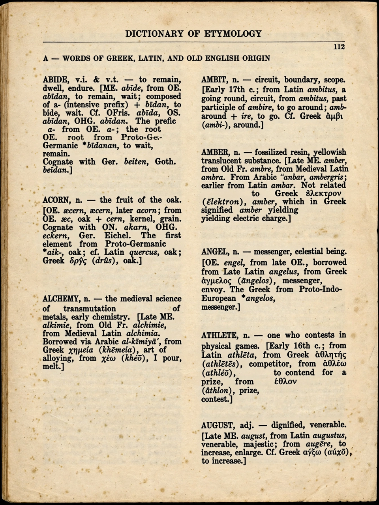

Etymology

Etymology is the study of the origin and history of words: where they came from, how their forms and meanings have changed, and how they passed between languages. The word itself comes from Greek etymon ("true sense") and -logia ("study"). Etymology is a core part of historical linguistics and a standard feature of entries in serious dictionaries such as the Oxford English Dictionary.
Methods
Etymologists use the comparative method: cognates in related languages are compared to reconstruct ancestral forms, following regular sound changes such as Grimm's law, which maps Proto-Indo-European stops to their Germanic counterparts (Latin pater → English father; Latin trēs → three). Written attestations fix the earliest known uses. Words enter languages by inheritance, by borrowing (sushi from Japanese, algebra from Arabic), by coinage (googol), by blending (brunch) and by acronym (laser).
Pitfalls
Folk etymology reshapes unfamiliar words by false analogy — crayfish is not a fish but from Old French crevisse. Resemblance alone proves nothing: English day and Latin dies look related but are not cognates. Nor does origin fix present meaning — appealing to a word's etymology to settle what it "really" means is the etymological fallacy; decimate once meant killing one in ten, but its modern sense of devastating is standard usage.